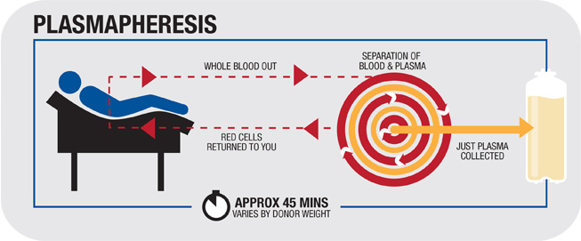

Convalescent plasma is the liquid part of blood that is collected from patients who have recovered from the novel coronavirus disease, COVID-19, caused by the virus SARS-CoV-2. COVID-19 patients develop antibodies in the blood against the virus. Antibodies are proteins that might help fight the infection. Convalescent plasma is being investigated for the treatment of COVID-19 because there is no approved treatment for this disease and there is some information that suggests it might help some patients recover from COVID-19.
Individuals who have recovered from the coronavirus infection can help treat others by donating blood for plasma therapy. The donor must be below the age of 45 years and should be free from other diseases such as HIV, hepatitis B, hepatitis C and other locally communicable diseases.The process takes about 1 hour wherein the donor will be connected to a small device that takes blood, separates the plasma from it and returns the remaining red blood cells to the body.
Stay Home . Be safe